Nicolò Battisti
Damien Bennett

Torsten Blum

Donal Brennan

Paul Brennan
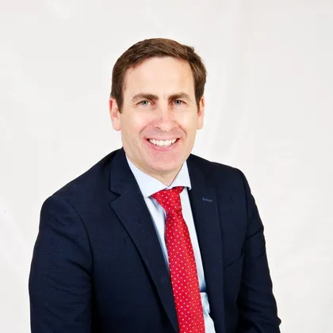
Ciaran Briscoe
David Byrne
Geraldine Byrne Nason

Stephen Chanock
Michael Clausen

Mary Coffee
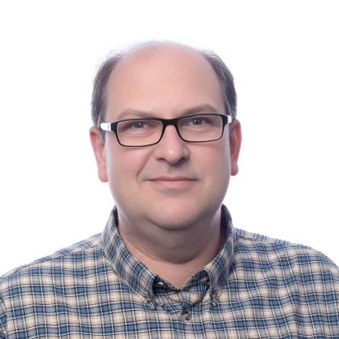
David Collingridge
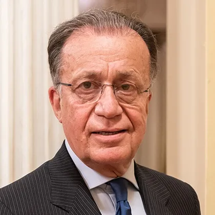
Alberto Costa

Claire Cronin

Cathal Crowe

Aedin Culhane

William Dahut

Daithí de Róiste

Csaba Dégi

Stewart Dickson
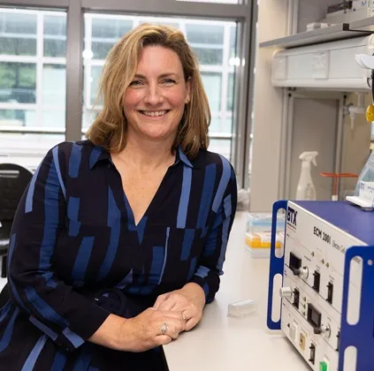
Orla Dolan
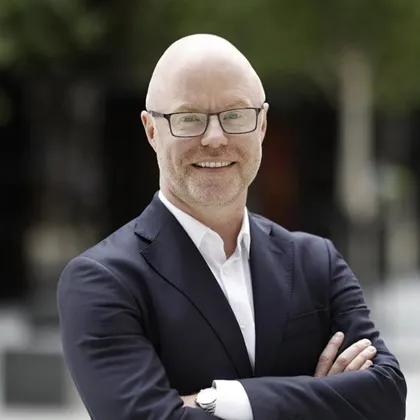
Stephen Donnelly

Amanda Drury

Neal Freedman
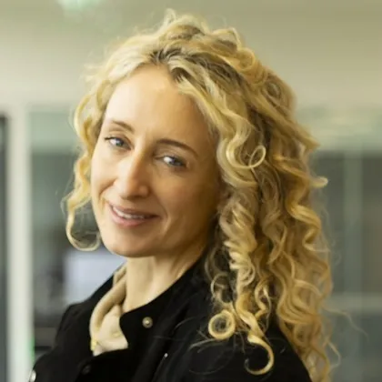
Ruth Freeman

William Gallagher

Satish Gopal

Julie Gralow

Vincent Guérend
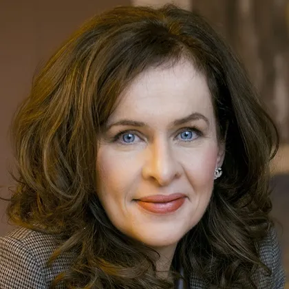
Deirdre Heenan
Josephine Hegarty

Tony Holohan
Debbie Keatley
Caius Kim

Robert Ladner

Mark Lawler

Daniel Longley
Maeve Lowery
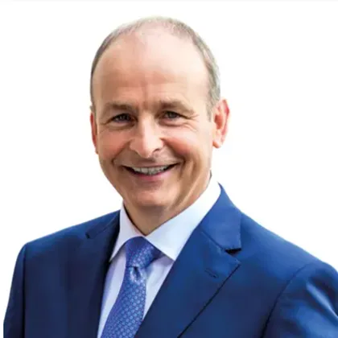
Michael Martin
Jonathan McCrea

Erin McGreehan
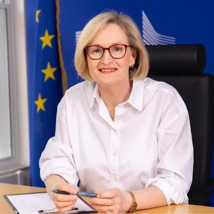
Mairead McGuinness

Francoise Meunier

Mike Morrissey

Eibhlín Mulroe
Deirdre Murray

Jarushka Naidoo
Richard Neal
Simon Oberst
Lorraine O'Driscoll

Mairead O'Driscoll

Risteárd Ó Laoide

Kathy Oliver

Averil Power
Richard Price

Tracy Robson

Henry Rodriguez

Philippe Roux

Piotr Rutkowski
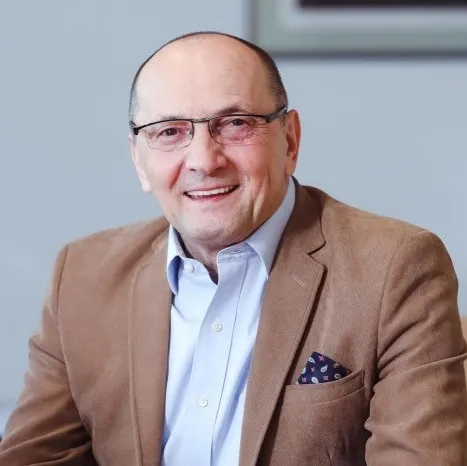
Mirsolav Samarzija
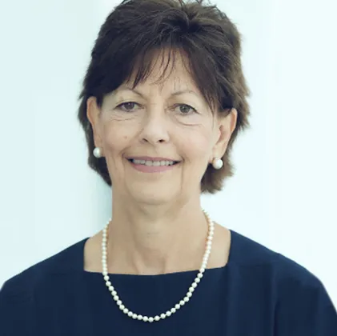
Lynn Schuchter

Kieran Sheahan

Isabelle Soerjomataram
Richard Spratt

Gilly Spurrier-Bernard

Richard Sullivan

Robin Swann